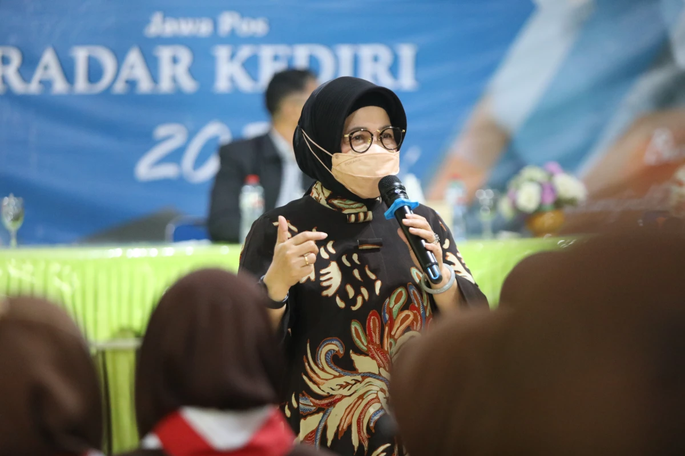
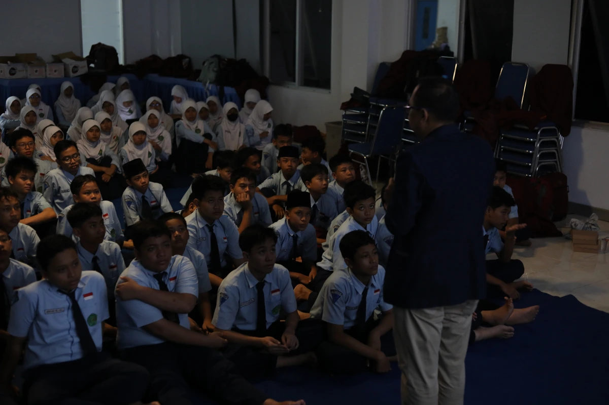

Parenting Program
Program motivasi, penguatan karakter, akhlak mulia, dan budi pekerti yang menyatukan visi sekolah, siswa, dan orang tua dalam satu ekosistem pendidikan yang positif.

Kolaborasi Pendidikan Lewat Parenting Program
Mendidik anak di era digital bukan hanya tugas institusi sekolah, melainkan membutuhkan sinergi erat antara guru di sekolah dan orang tua di rumah. Parenting Program dari Radar Kediri Institute dirancang untuk menjembatani komunikasi tersebut melalui seminar dan pelatihan emosional yang menyentuh hati serta membuka wawasan pola asuh yang tepat.
Kegiatan ini berupa pemberian motivasi mendalam kepada siswa sekaligus orang tua dengan menghadirkan narasumber/motivator berpengalaman. Materi yang disampaikan berfokus pada penguatan karakter, pembentukan akhlak mulia, penyembuhan trauma (inner child), serta bagaimana orang tua dapat mendukung potensi terbaik anak tanpa memberikan tekanan berlebih.
Di sisi lain, program ini memberikan nilai prestisius bagi institusi penyelenggara. Sekolah dapat membuktikan komitmennya dalam mendukung implementasi Proyek Penguatan Profil Pelajar Pancasila. Terlebih lagi, kegiatan akan dipublikasikan secara meluas di Jawa Pos Radar Kediri untuk meningkatkan citra positif sekolah di mata calon siswa dan masyarakat luas.
Manfaat Program
- Menyelaraskan pola didik (parenting) antara orang tua di rumah dan guru di sekolah
- Membangun karakter anak, empati, kemandirian, dan semangat gotong royong
- Meningkatkan motivasi belajar siswa, terutama menjelang masa ujian atau kelulusan
- Membantu sekolah memenuhi tuntutan kurikulum pembentukan karakter secara efektif
- Menumbuhkan ikatan emosional (bonding) yang kuat dan sehat antara anak dan orang tuanya
- Sekolah mendapat publikasi positif sebagai lembaga pendidikan yang peduli akhlak siswanya
Susunan Acara Seminar (Contoh Sesi Setengah Hari)
Registrasi & Sambutan
Kehadiran orang tua/wali murid beserta siswa, dilanjutkan sambutan kepala sekolah
Sesi 1: Pola Asuh Era Digital (Orang Tua)
Pemaparan materi oleh pakar parenting tentang memahami psikologi remaja dan gaya komunikasi efektif
Coffee Break
Jeda istirahat dan penataan formasi duduk berdampingan (siswa dan orang tua)
Sesi 2: Motivasi Karakter & Budi Pekerti
Sesi inspirasi dan muhasabah yang melibatkan interaksi langsung antara anak dan orang tuanya
Sesi Pelukan & Resolusi Keluarga
Sesi emosional untuk saling memaafkan, pemberian bunga/simbolis kasih sayang, dan penutupan acara
Event Gallery
Dokumentasi keharuan dan kehangatan dalam acara Parenting Program — membangun jembatan hati antara anak, orang tua, dan guru.
{kind=link}
{kind=link}
{kind=link}
Fasilitator Event

Divisi Event & Publikasi
Radar Kediri Institute
Konsultasi ketersediaan motivator:
officialrkinstitute@gmail.com
+62 831-9800-2246
Tempat & Eksekusi
Kegiatan dapat disesuaikan dengan kapasitas peserta, baik di fasilitas milik sekolah maupun di gedung pertemuan eksternal.
Aula Sekolah / Gedung Pertemuan

Acara yang emosional membutuhkan dukungan teknis yang prima. Tim Radar Kediri Event Organizer siap memastikan tata suara (sound system), pencahayaan (lighting), dan sirkulasi udara di dalam ruangan mendukung penuh jalannya sesi renungan agar pesan dari narasumber/motivator dapat tersampaikan dengan maksimal.
Dukungan Fasilitas (Opsional)
- Narasumber Motivator Skala Nasional/Lokal
- Sound system standar seminar motivasi
- Dokumentasi foto & video cinematic
- MC (Master of Ceremony) profesional
- Liputan khusus & Publikasi di Koran Radar Kediri
Pertanyaan Sering Diajukan
Temukan informasi detail seputar pelaksanaan dan teknis kegiatan Parenting Program.